Looking for a place to relax your mind? Tours and Travel have got you
covered. Search no more: Here are 5 amazing places to visit.
Maasai Mara National Reserve
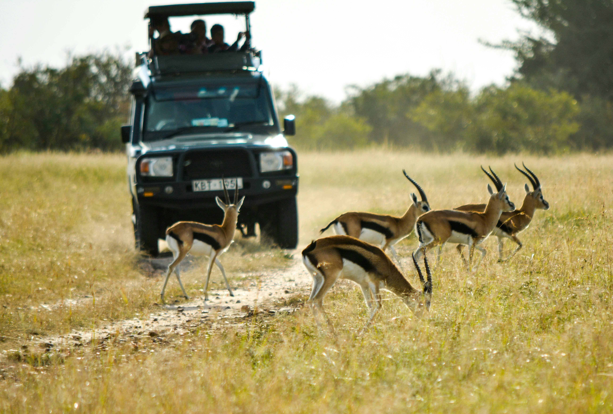
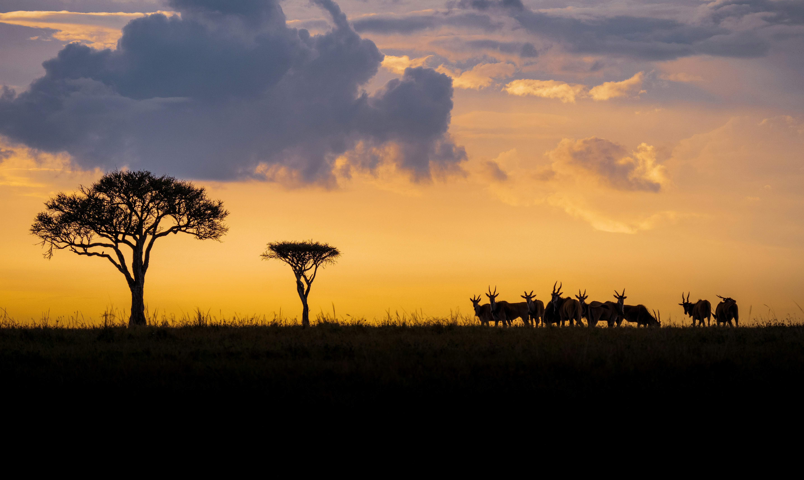
Visit the Maasai Mara to witness the incredible
Wildlife, one of nature's most dramatic spectacles. The
wildlife diversity and cultural richness of the area offer an
unforgettable experience.
See the Great Migration
Go on a game drive
Enjoy great wildlife sceneries
Visit a Maasai village
Camp under the stars
Diani Beach
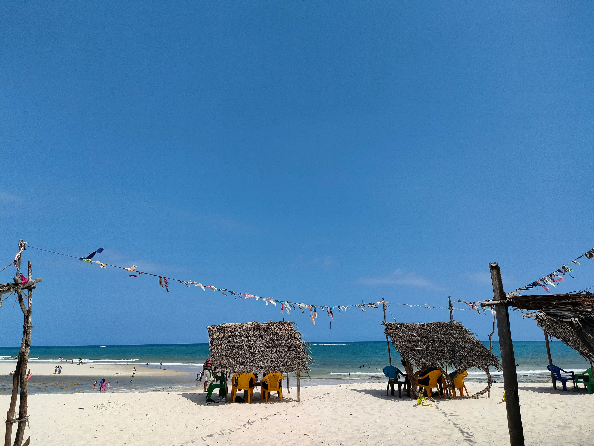
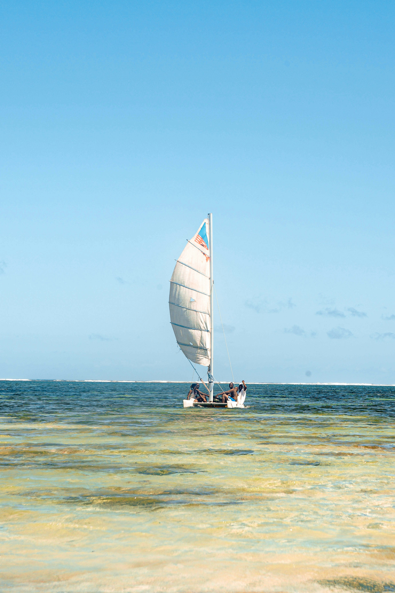
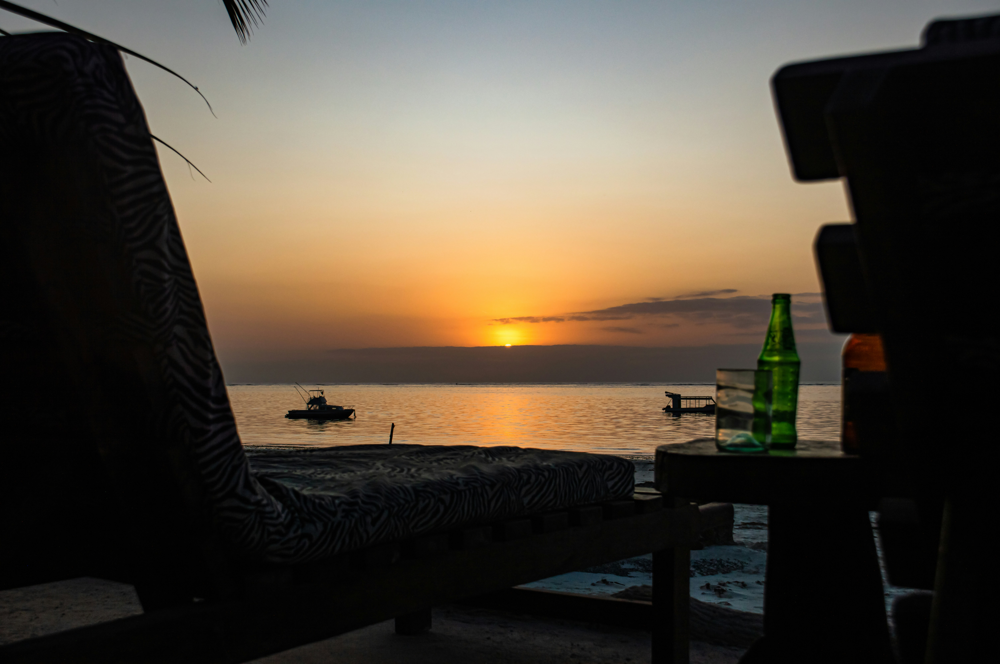
Diani Beach a dream coastal getaway. With its clean
beaches, coral reefs, and exciting water sports, it’s the perfect place
to relax and explore.
Swim in the ocean
Snorkel and dive
Try surfingin the Ocean
Draw on the beach sand
Enjoy seafood delicacies
Mount Kenya
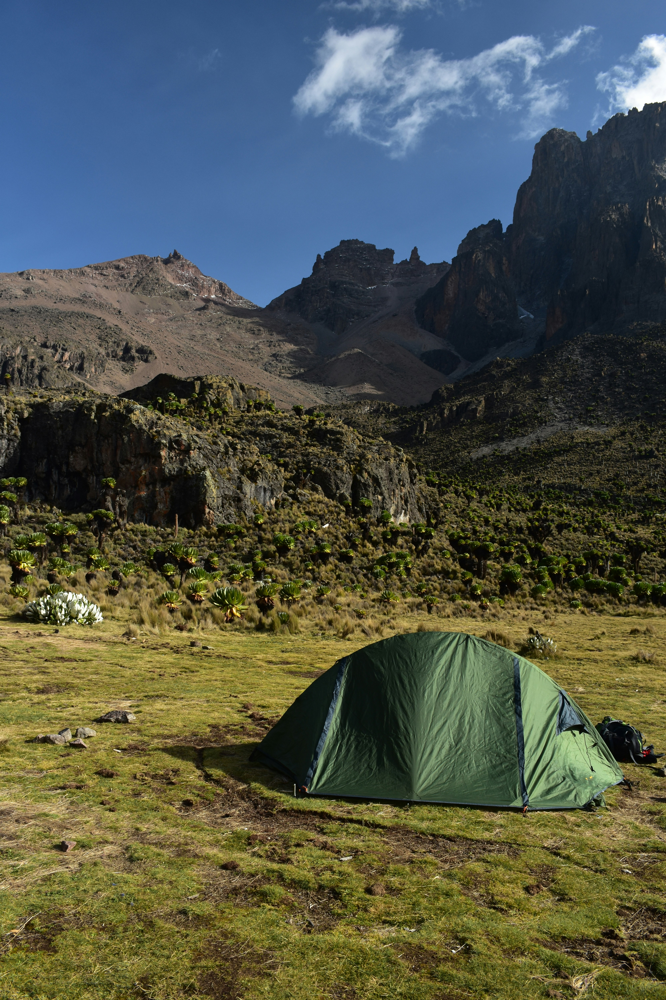
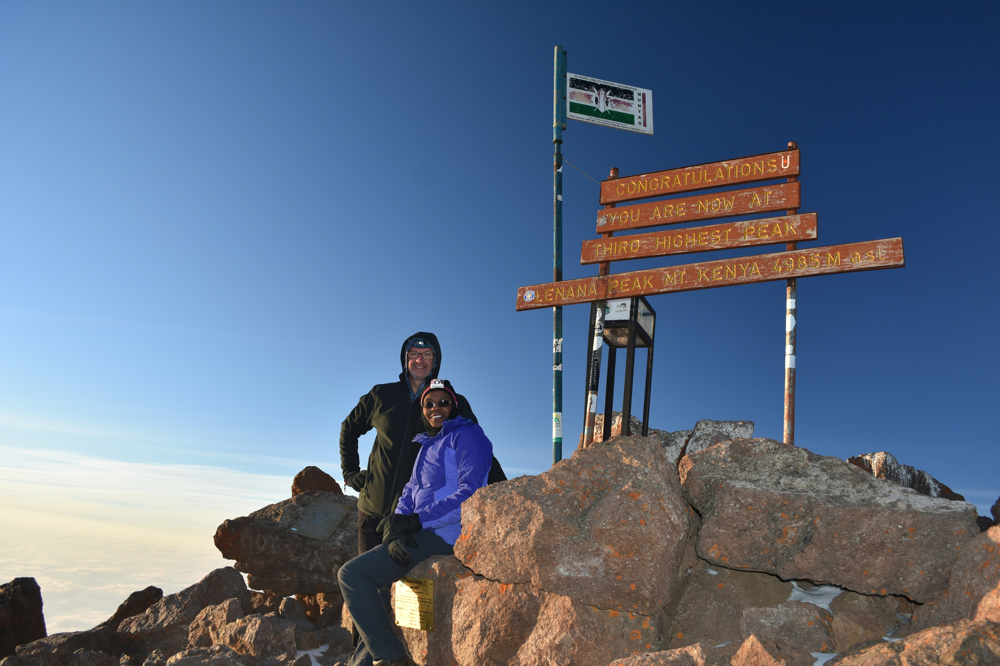
Mount Kenya is Africa’s second-highest peak.Would you
love to challenge yourself and experience its diverse
ecological zones, scenic trails, and cool mountain air.
Hike to Point Lenana
Camp in the park
See alpine vegetation
Enjoy scenic views
Photograph sunrises
Lake Nakuru National Park
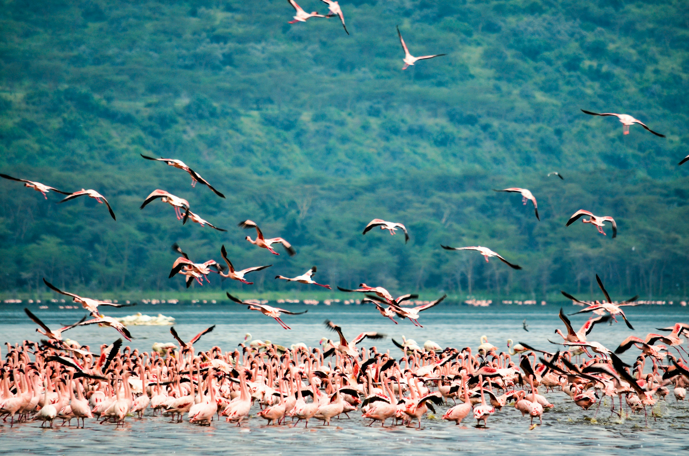
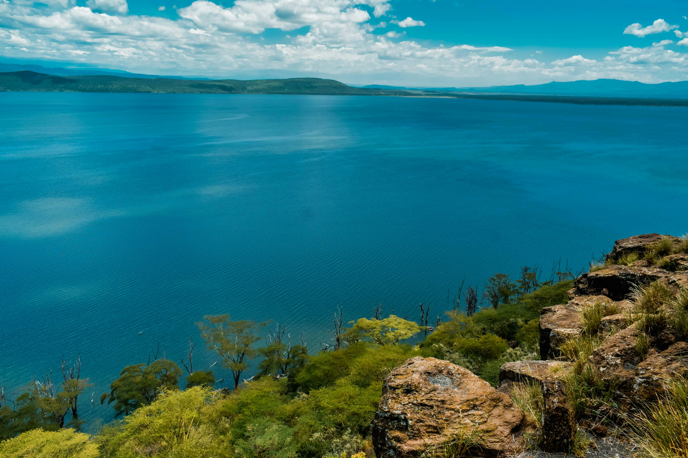
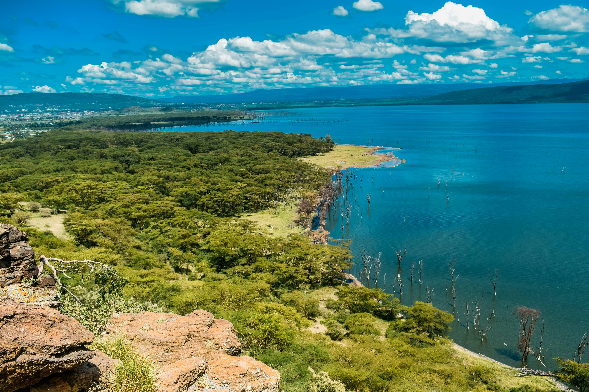
Lake Nakuru is famous for its flamingos and rhinos.
Visit there for a quick safari experience with beautiful lake
views and rare wildlife.
Watch flamingos
See rhinos and lions
Visit Makalia Falls
Picnic at the cliffs
Take scenic drives
Lamu Island
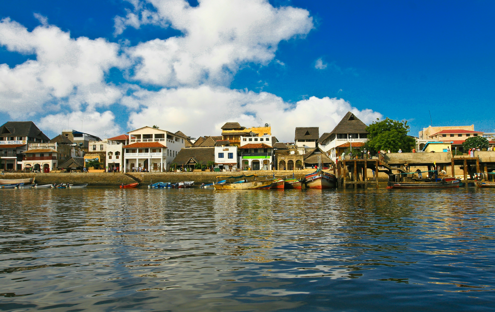
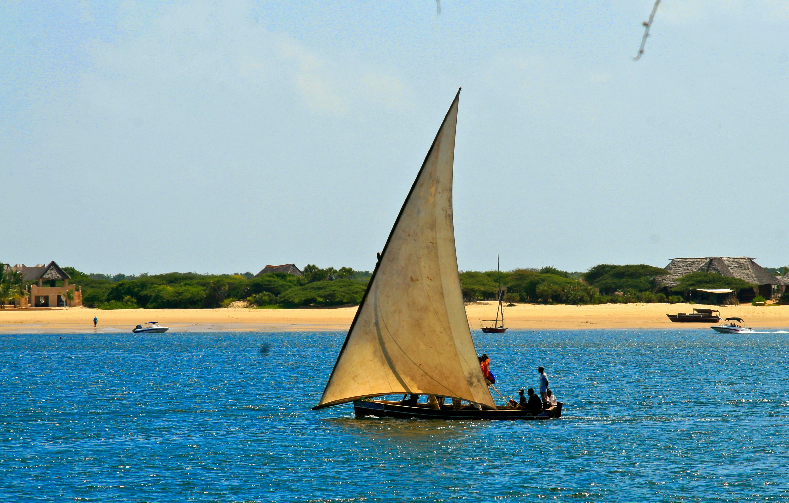
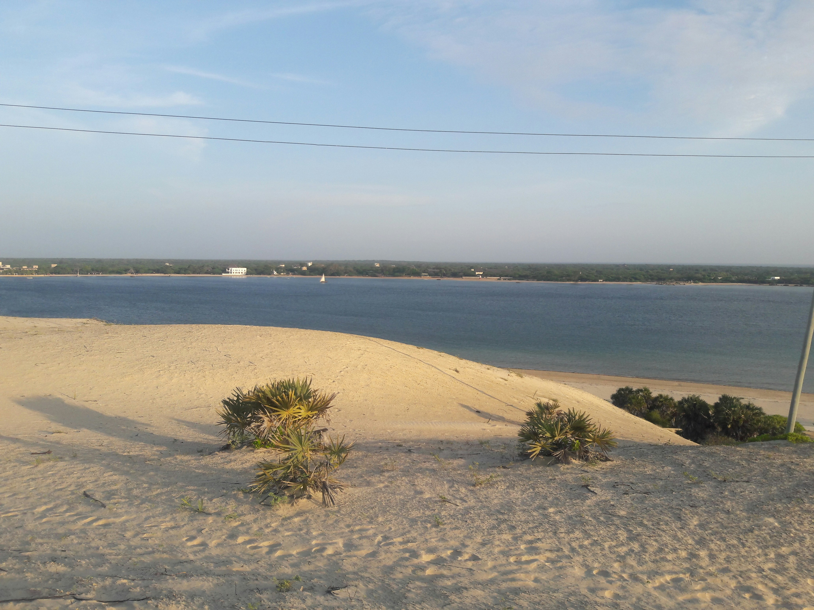
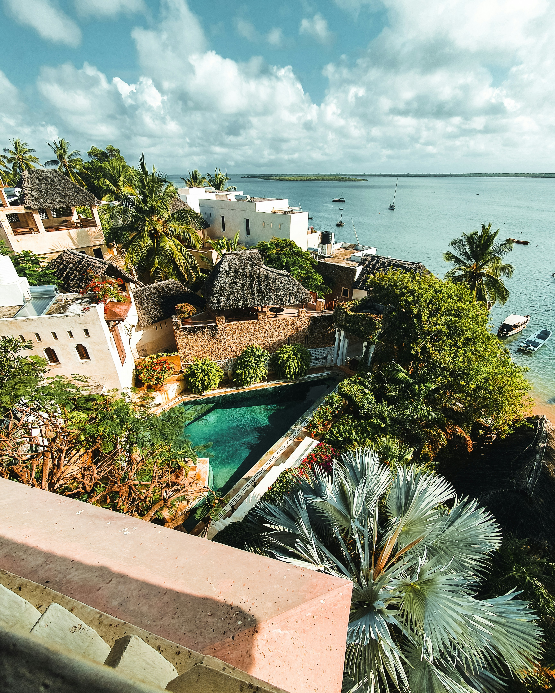
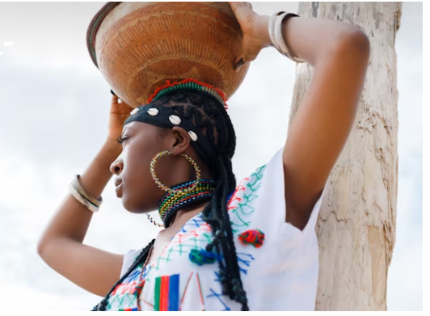
Lamu is a peaceful cultural escape. Its
timeless Swahili town, friendly locals, and quiet atmosphere make it a
great place to unwind and explore history.